Balkis Orchard
February 2016
University Project Alba
Balkis Orchard is a 100% Lebanese fresh juice.Today Balkis continues the tradition of high quality, freshly squeezed juice made from premium quality, real fruit.
The target of this project was to create a parallax website.
 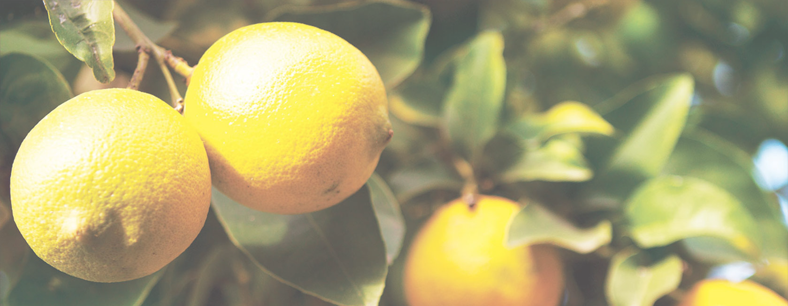
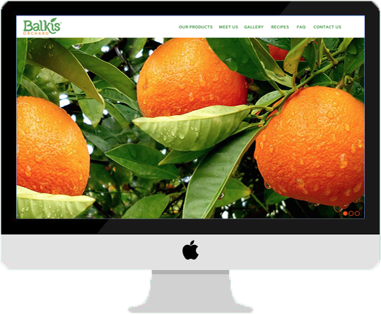
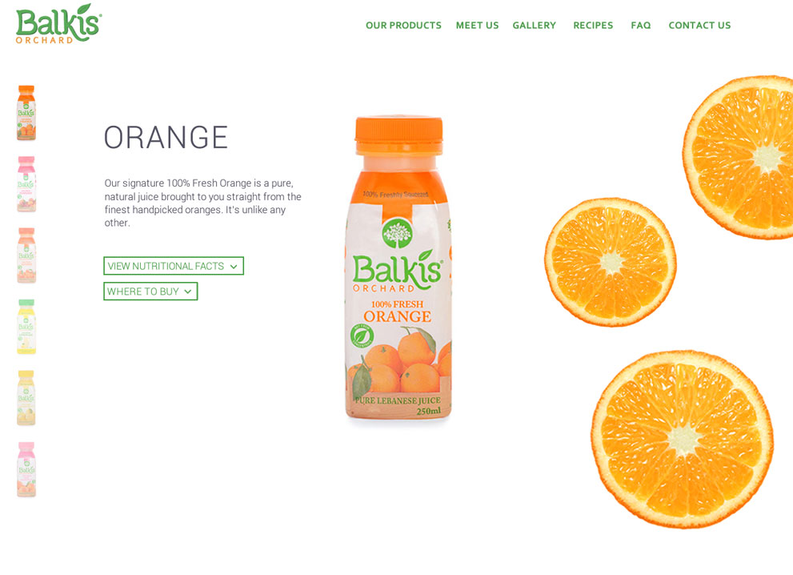
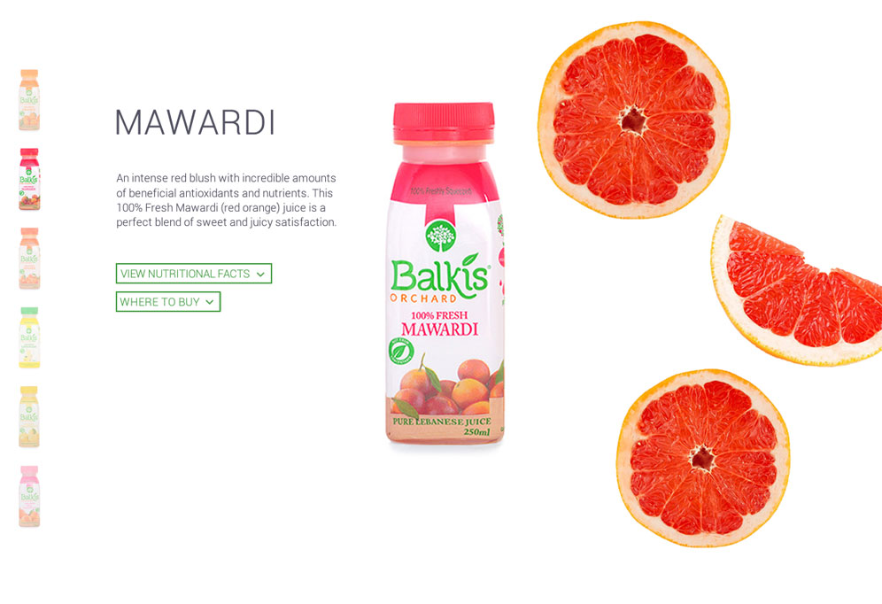
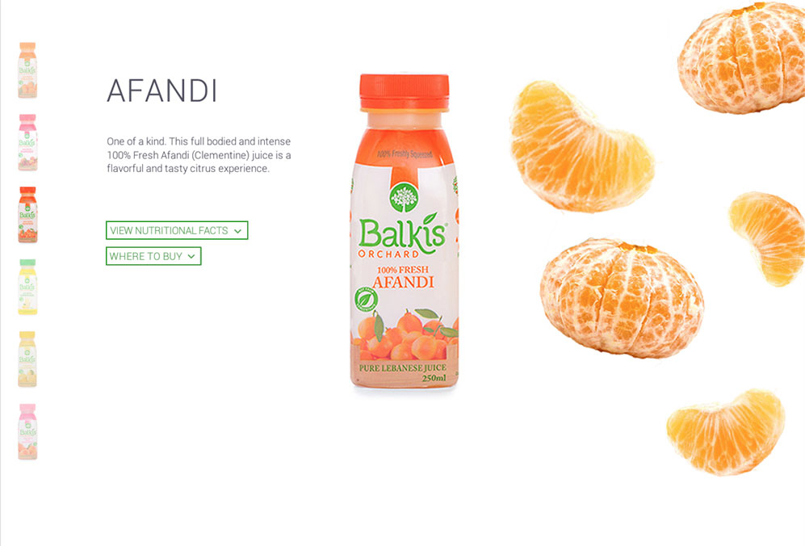
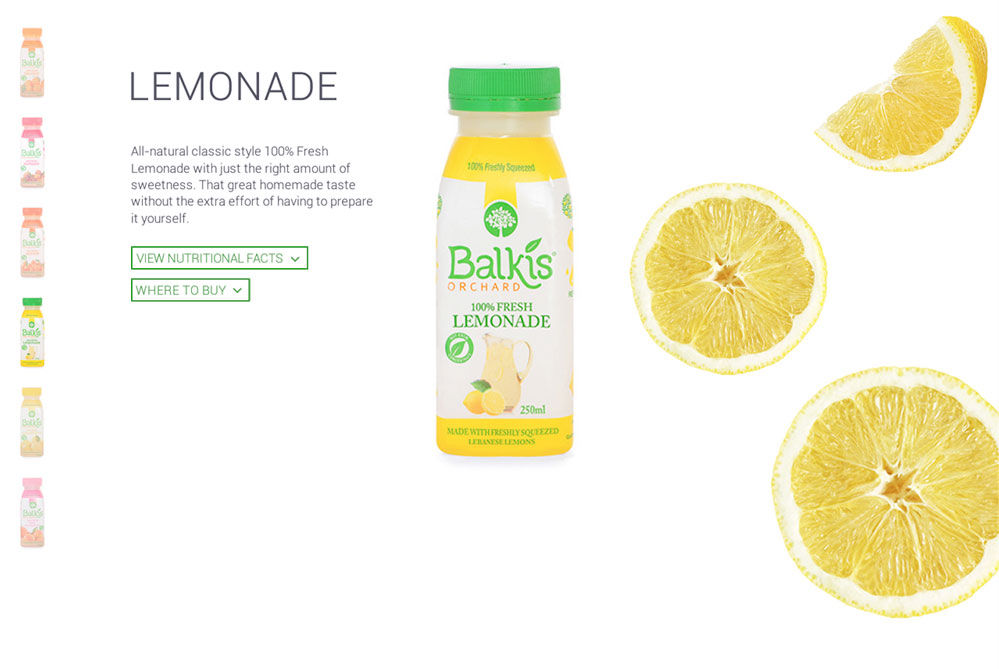
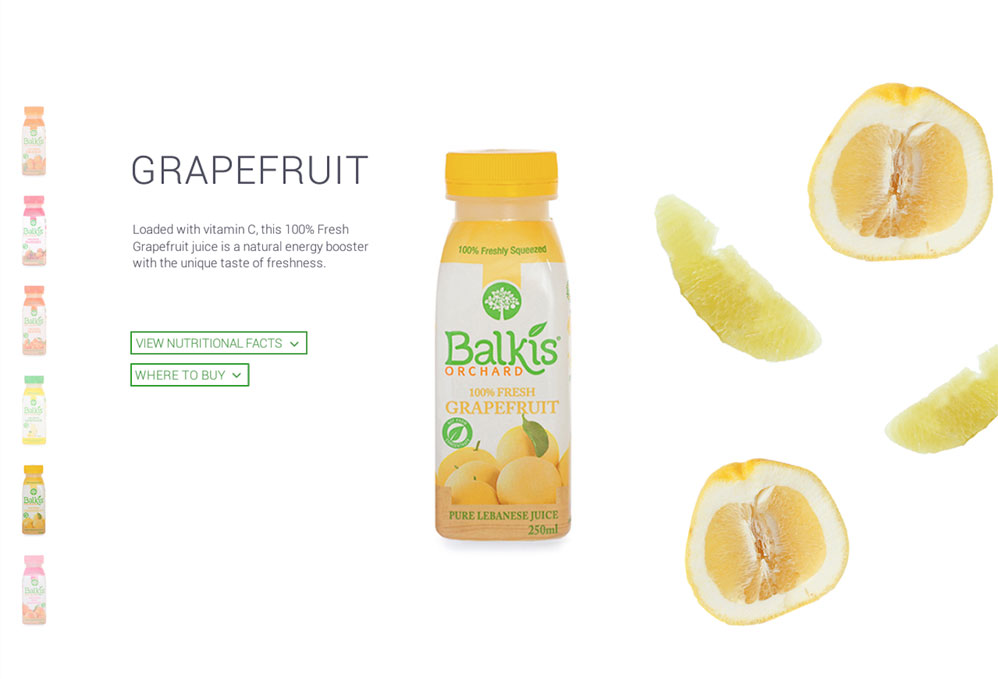
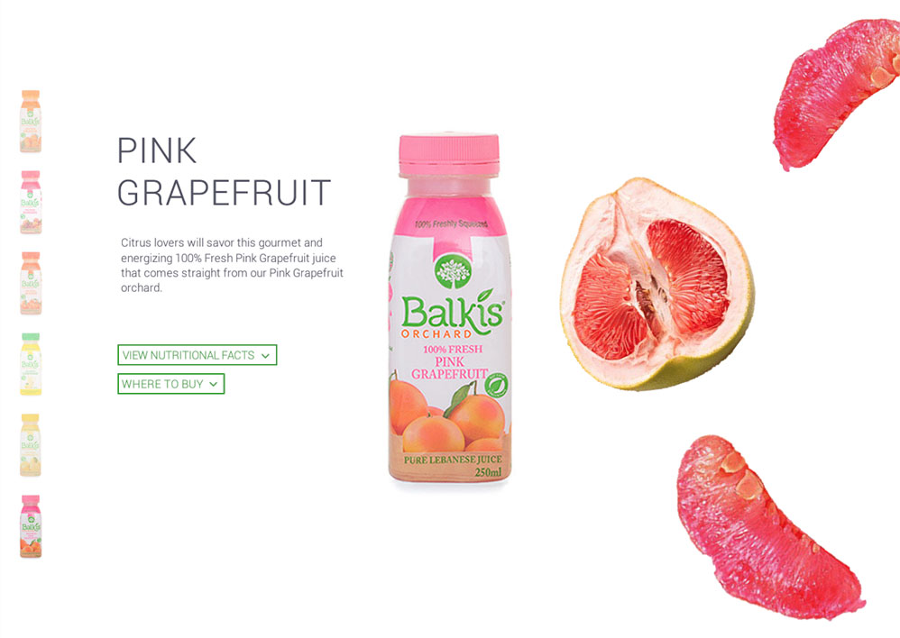
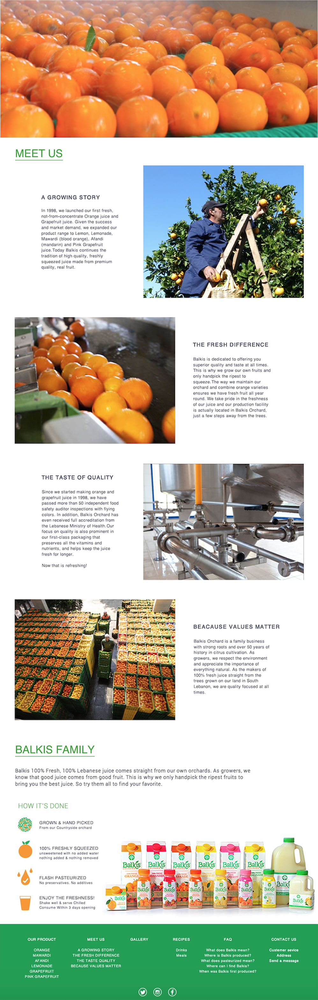
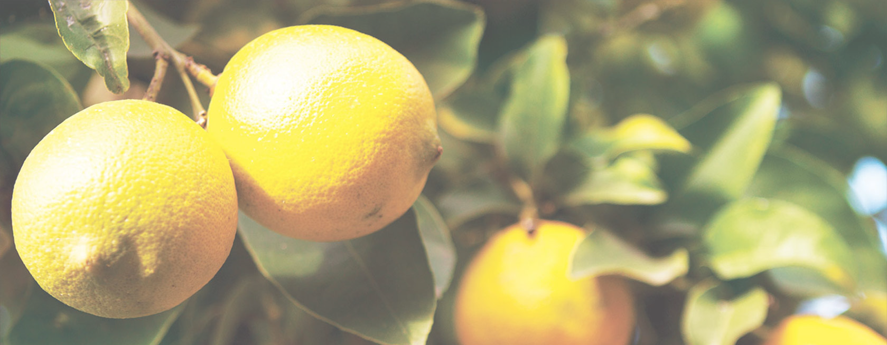
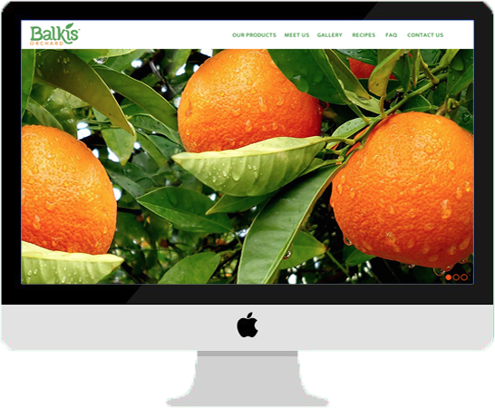
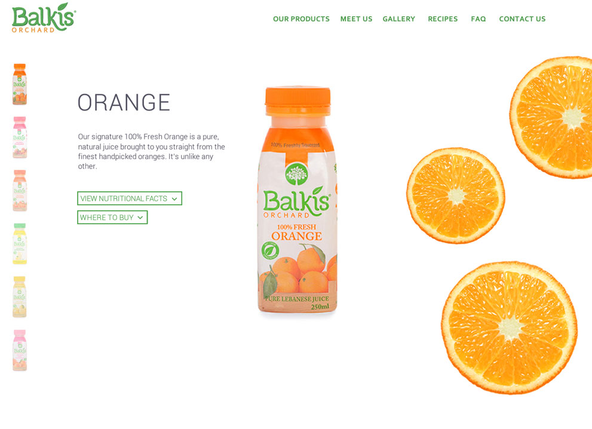
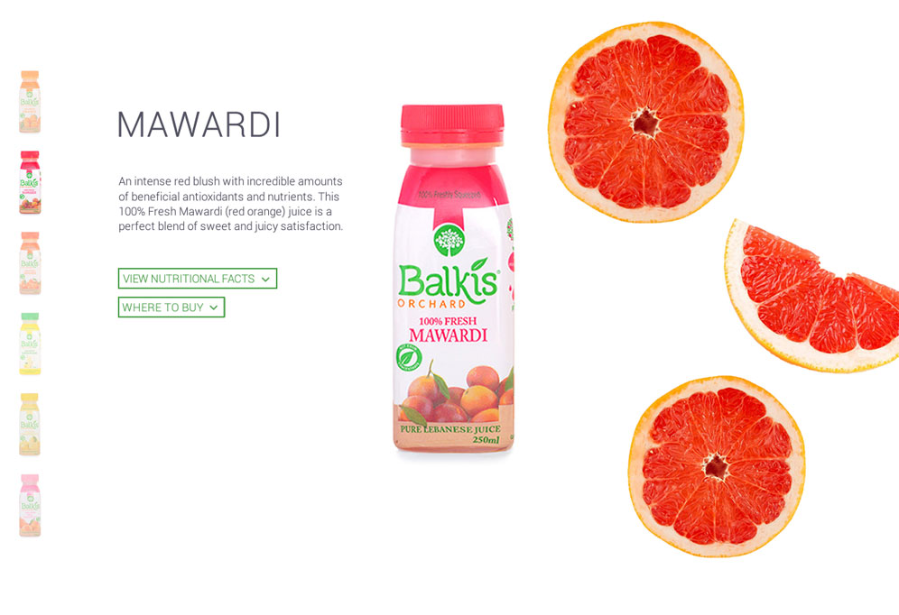
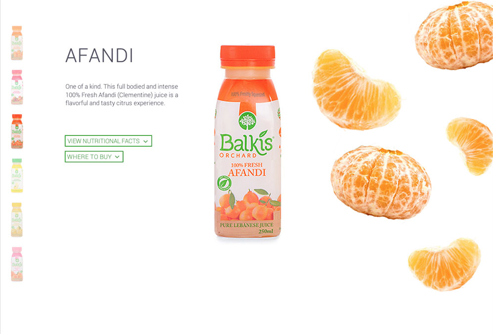
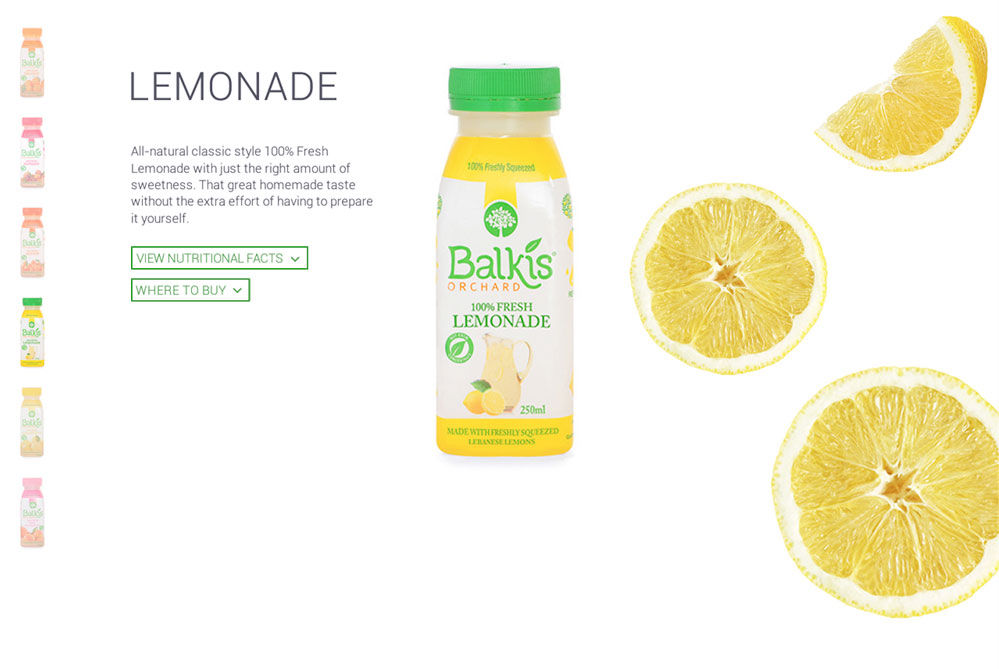
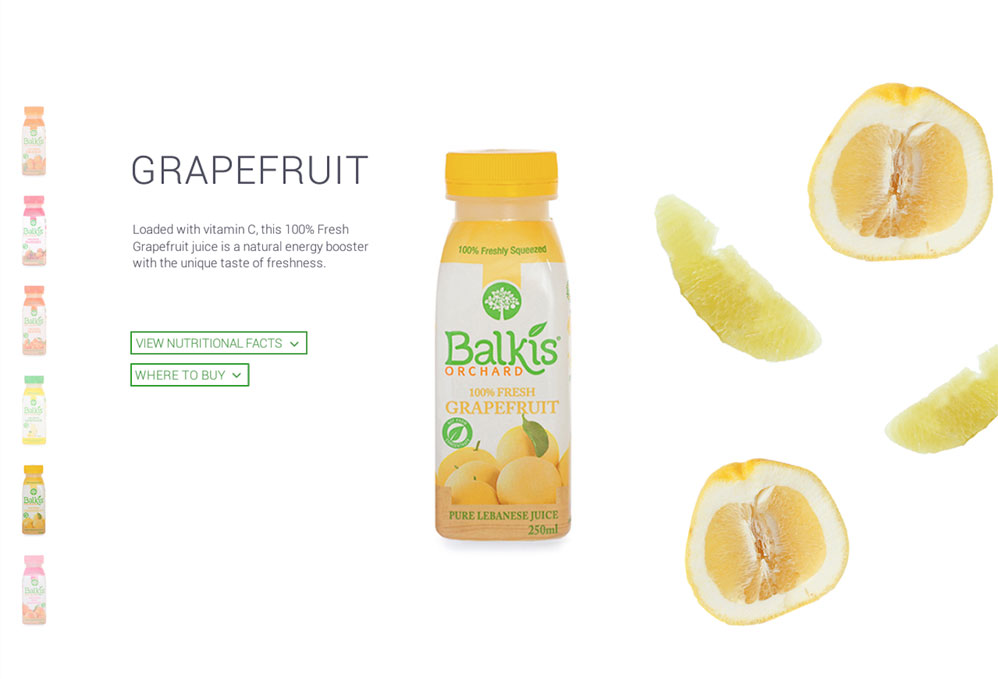
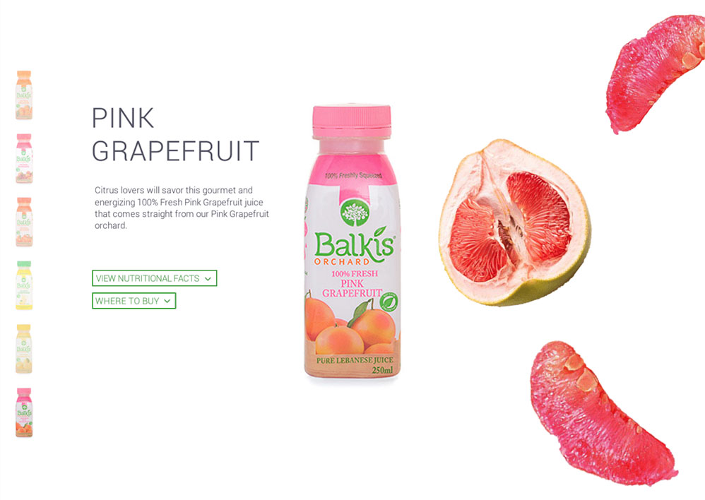
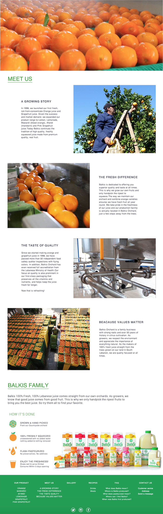